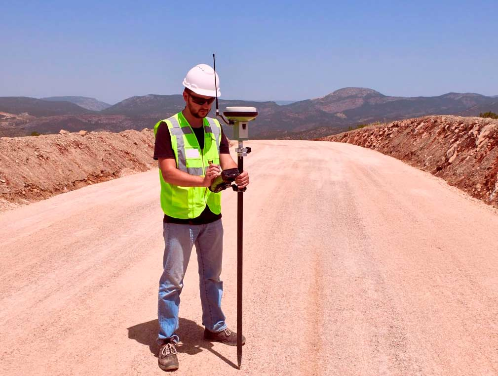

El error no aparece el día que mides
La diferencia entre dos cotizaciones no era mucha. Se eligió la más barata. Meses después, el plano hubo que rehacerlo por completo.
No todo topógrafo barato trabaja mal. El problema aparece cuando el precio bajo se logra sacando del trabajo justamente los controles que permiten saber si una medición está bien: menos terreno, menos comprobación, menos revisión de antecedentes legales.
La idea central: el precio, por sí solo, no dice nada sobre la calidad. Hay que comparar alcance, metodología y responsabilidad profesional — recién después, el precio.
Mismo nombre, trabajos distintos
Dos cotizaciones pueden decir "levantamiento topográfico" y ser trabajos muy distintos: una incluye revisión de título, puntos de control y mediciones redundantes; la otra puede ser una visita rápida y un PDF.
Tener un equipo GNSS de alta gama tampoco alcanza por sí solo. Existen normas técnicas internacionales (como la familia ISO 17123) que no evalúan el instrumento, sino si el procedimiento en terreno demuestra la precisión que ese trabajo necesita. Tener GNSS con RTK es una característica del equipo — no una garantía del resultado.
| Capa | Qué aporta | Qué falla si se omite |
|---|---|---|
| Equipo | Sensor y software | Un error de configuración se propaga a todo el levantamiento |
| Metodología | Puntos de control, redundancia | Sin control, el error queda invisible hasta la siguiente etapa |
| Antecedentes legales | Título, inscripción, deslindes | Se puede levantar perfectamente un límite equivocado |

La mayoría no llega por primera vez
Buena parte de quienes nos contratan no llegan probando suerte: llegan después de un plano rechazado, un deslinde en duda o una medición anterior que no sirvió para lo que realmente necesitaban.
Rehacer un trabajo siempre cuesta más que hacerlo bien la primera vez — no solo en dinero, también en tiempo y trámites.
Y si el error ya quedó construido, la nueva medición suele ser la parte más simple de arreglarlo: después puede venir demolición, materiales y más plazo.
¿Tu caso se parece a esto? Contanos qué pasó y te decimos si tiene arreglo — la primera evaluación no tiene costo. Escribinos por WhatsApp →
Cuando el error ya está en terreno
Los tribunales chilenos sí han debido analizar errores topográficos: un fallo de 2022 sobre defectos de construcción dejó constancia de un "error topográfico" en las canaletas de un edificio, con pendientes y desagües mal ejecutados.
Otro caso, resuelto por la Corte Suprema en 2026, disputaba apenas 64,12 m² entre vecinos con mediciones GPS y peritaje de por medio. La lección: la topografía puede demostrar con precisión dónde está un límite. No puede, por sí sola, decidir a quién pertenece.
El Código Civil (artículos 842 y 843) regula la fijación de deslindes y la indemnización si se remueven mojones sin más trámite. Por eso un profesional prudente cruza la medición con el título antes de sacar conclusiones.
Antes de aceptar una cotización
Este checklist sirve incluso para comparar a otros topógrafos con nosotros. Si alguna respuesta genera dudas, esa es la señal a seguir.
- ¿Para qué es la medición? SAG, DOM, construcción o deslinde no son el mismo trabajo.
- ¿Cómo controlan que la medición esté bien? Puntos de control o reocupaciones — no "el equipo no se equivoca".
- ¿Quién es el responsable profesional? Nombre, título y habilitación identificables.
- ¿Qué incluye exactamente el precio? Terreno, plano, visitas y gestiones externas definidos, no una cifra suelta.
Antes de elegir la oferta más barata, pregunta: ¿qué trabajo hace la otra cotización que esta no está haciendo? Si querés, te ayudamos a compararla gratis.
Preguntas frecuentes
¿Un precio bajo en topografía siempre significa mal trabajo?
No necesariamente. Un profesional eficiente puede cobrar menos y hacer un excelente levantamiento. El problema aparece cuando el ahorro viene de eliminar controles, horas de terreno o revisión de antecedentes.
¿Una medición topográfica resuelve un conflicto de límites con el vecino?
No por sí sola. La topografía puede determinar con precisión dónde está un punto o un polígono, pero no decide a quién pertenece el terreno: eso depende del título de dominio y su inscripción, que deben cruzarse con la medición.
¿Quieres entender la diferencia técnica entre equipos antes de cotizar? Lee GPS de mano vs GNSS: la diferencia que no se ve a simple vista.
¿Vas a subdividir un predio rural? Lee quién es el profesional más idóneo para hacer el plano de subdivisión.
En TopoÑuble
Te explicamos qué necesita tu terreno antes de cotizarlo
No vendemos la mayor precisión posible, sino la precisión correcta para tu proyecto: subdivisión, deslinde, construcción o replanteo. Metodología, controles y responsable profesional, claros desde el primer contacto.
Porque pagar de más no tiene sentido; pagar dos veces, menos.
Respuesta el mismo día · Evaluación sin costo · Sin compromiso